行者无疆#间奏#起航——安阳
一、出发
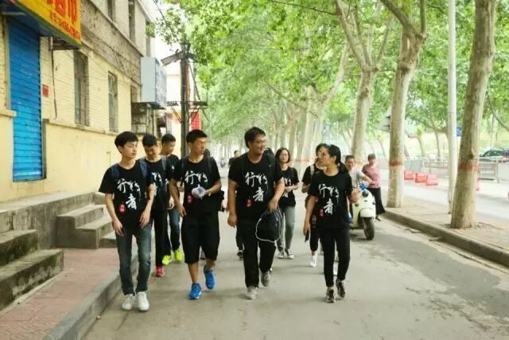
在路上
迈着晨光，团队八点准时出发，对中国八大古都之一的安阳的两个主要文化胜地——中国文字博物馆和殷墟——进行了深入调研。
二、中华文字，源远流长
抵达中国文字博物馆
“一片甲骨惊天下”，一片甲骨一个王朝，甲骨作为文字载体，穿越时空，让科考史料的真实性得以验证。以史为鉴，可以知兴替，甲骨文的发现、发掘和研究，使商的兴衰呈现世人眼前。展厅偶遇黄发垂髫，时代的过去与未来，感叹曾经创造的伟大，也为今天的流传骄傲。
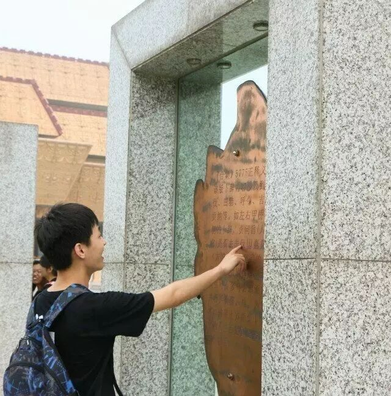
一片甲骨知天下
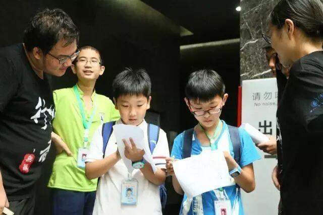
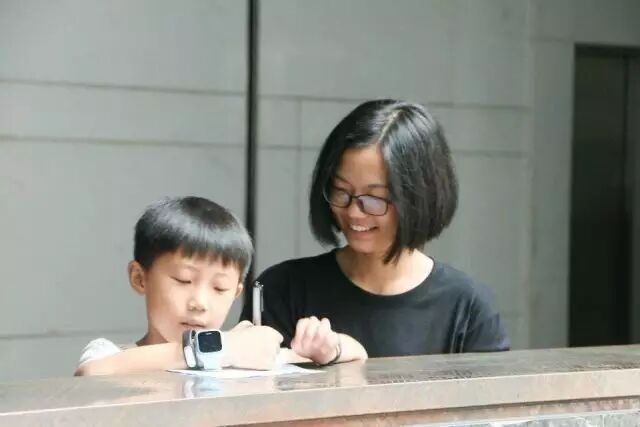
黄发垂髫，问卷调查涵盖多层面
“汉字源流释古今”，字法自然，仓颉造字虽尚未考证，但神秘面纱终会解开。甲骨纪事，象形，指事，会意，形声，转注，假借，规则造就传承与延续。钟鼎千秋，身份与地位，等级与规矩，娓娓道来。汉字承载着历史，也孕育着希望，我们一起感受历史记忆与文化积淀。
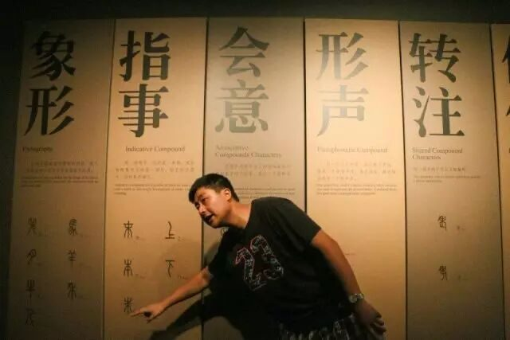
象形、指事、会意、形声，转注……
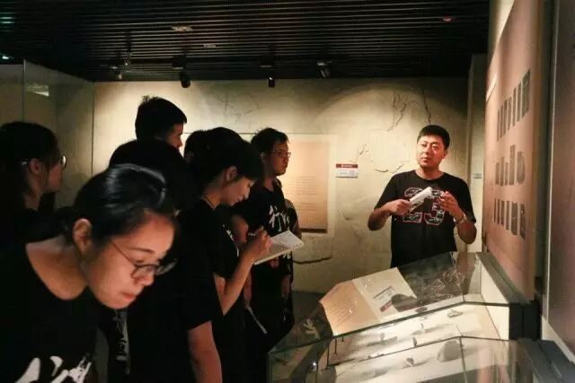
文字工作者悉心讲解，尽领文字奥妙。
三、殷商文化，厚重强盛
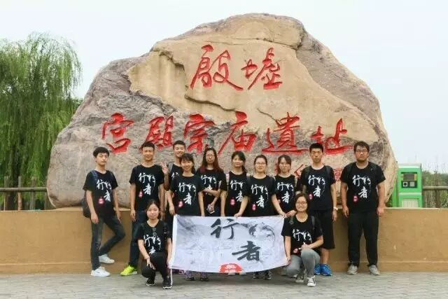
抵达殷墟
走进殷墟博物馆，近距离感受殷商文化的魅力，少了些许陌生感，多了一份真实。沿途经过甲骨碑林和青铜器展馆，迎面而来的更多的是震撼和肃穆，千年的距离，在这一瞬间被拉近。历史，不过数尺之隔。
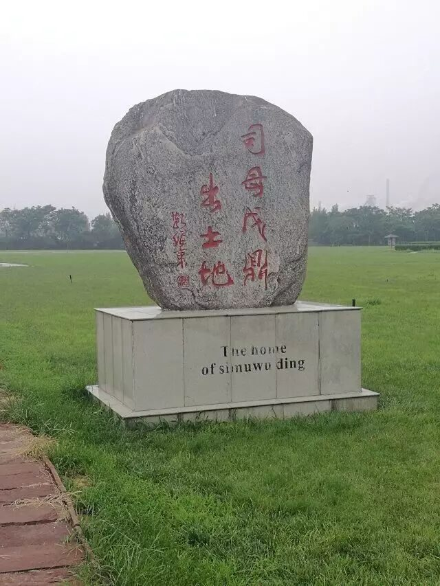
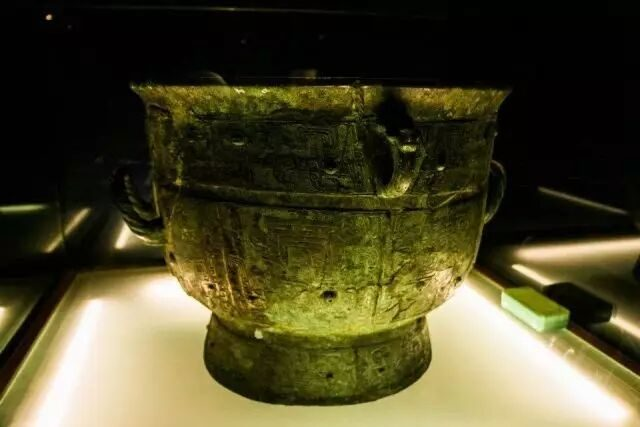
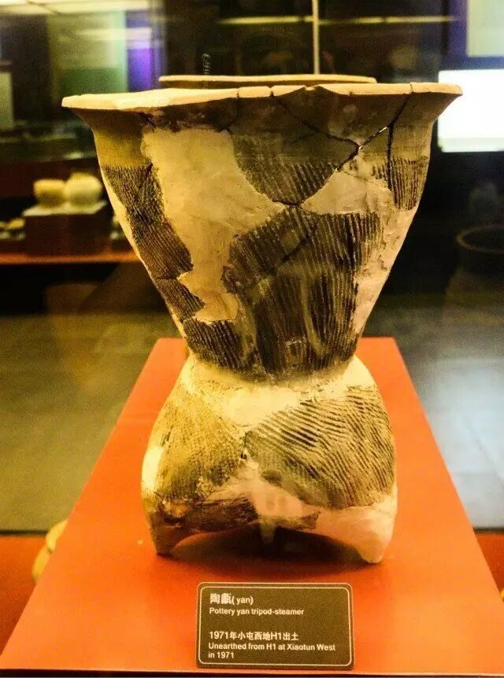
殷商旧址，文化璀璨。
而车马坑仿佛是一道光，将殷商畜力车制的文明和奴隶社会残酷的杀殉制度送到眼前。篱篱晴草，见证了千载春秋的荣枯；累累白骨，保存下走向文明的记录。今天的王陵区依然幽寂沉静，忠实地守护着当年叱咤风云的商代君王。
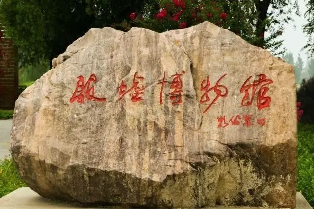
我们来了，我们走了
这座记载最久远文字历史的城市
也勾画了中华民族的彳亍步伐
这座铸造了最精美青铜器的城市
也熔铸了中华民族的坚韧不拔
下一站，登封
我们来了！
文字 | 李亚梅
摄影 | 岳浩然 张熹玮
责编 | 王梓腾
审核 | 章静 彭博
行
者
无疆实践团
扫描二维码关注行者酱
QQ号：2758025831
来源：行者无疆实践团